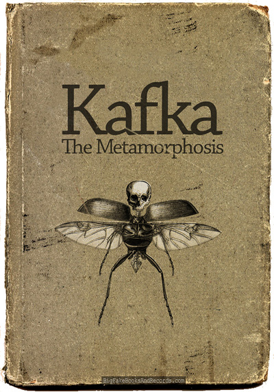

Nedokončený román, vrcholné dílo Franze Kafky. Do příběhu šestnáctiletého chlapce, kterého rodiče z trestu poslali do Ameriky, a jenž bezmocně hledá zakotvení v té zemi divných zvyklostí a čistě obchodního vztahu k člověku, autor promítl mnoho ze svých životních zážitků, zejména ze svého postavení v otcovském domě, kde otec nepřál jeho literárním sklonům.
Když se Řehoř Samsa jednou ráno probudil z nepokojných snů, shledal, že se v posteli proměnil v jakýsi nestvůrný hmyz. Ležel na hřbetě tvrdém jak pancíř, a když trochu nadzvedl hlavu, uviděl své vyklenuté, hnědé břicho rozdělené obloukovitými výztuhami, na jehož vrcholu se sotva ještě držela přikrývka a tak tak že úplně nesklouzla dolů. Jeho četné, vzhledem k ostatnímu objemu žalostně tenké nohy se mu bezmocně komíhaly před očima. Takto začíná jedna z nejslavnějších povídek literatury 20. století.
V den svých třicátých narozenin se bankovní prokurista Josef K. probudí ve svém bytě za přítomnosti dvou cizích mužů, kteří mu oznámí, že je zatčen. Nedozví se však, z čeho je obviněn. Během vyšetřování na svobodě se Josef K. snaží záhadu svého nesmyslného zatčení vysvětlit, ale když je opravdu pozván k procesu, ukáže se všechno jako mnohem závažnější a absurdnější, než si myslel. Nedokončený román považovaný za jedno z klíčových děl dvacátého století se stal předlohou řady divadelních zpracování po celém světě.
„Mám jen jednu prosbu,“ napsal Kafka svému nakladateli Kurtu Wolffovi v roce 1913. „Stoper, The Metamorphosis a The Judgment patří k sobě, vnitřně i navenek. Mezi těmi třemi existuje zřejmá souvislost, a co je ještě důležitější, jedna tajná, z toho důvodu bych se zdráhal vzdát možnosti, aby byly vydány společně v knize, která by se mohla jmenovat Synové.“
Deníky uznávaného autora Proměny a Procesu–jednoho z největších spisovatelů dvacátého století-poskytují pronikavý pohled do Prahy. Tyto deníky pokrývají roky 1910 až 1923, rok předtím Kafka zemřel ve čtyřiceti letech. Poskytují pohled do Kafkových vyprávění o jeho snech, o jeho pocitech otec, kterého uctíval, a žena, kterou si nedokázal vzít, jeho pocit viny a jeho pocity vyvržence. Nabízejí popis života téměř nesnesitelné intenzity.
Knižní podoba výstavy Franze Kafky, která vznikla v roce 1999 v Barceloně, potom byla uvedena v roce 2003 v Židovském muzeu N. Y., r. 2005 v Praze. Soubor textů různých autorů na téma Kafka a Prahy, jeho dílo, vzpomínky a komentáře. Obsáhlá dokumentační příloha z rodinného alba, jeho texty, faksimilie dopisů a díla.
Hlavním hrdinou románu Zámek je mladý zeměměřič K. Přijíždí neznámo odkud do neznámé vesnice, aby zde provedl geodetické měření. Brzy si všimne, že mu místní obyvatelé nevěří a bojí se ho. Situaci zpočátku příliš nerozumí, ale postupně pochopí, že celý zdejší život ovlivňuje prostřednictvím různých více či méně významných byrokratů tajuplný zámek nad vesnicí. Proč ten, kdo ho do vesnice povolal, mu najednou začíná házet klacky pod nohy? Absurdně groteskní Kafkův román patří mezi jeho vrcholná díla.
Dopisy, které napsal Franz Kafka Mileně Jesenské. Kafka poznal Milenu během jednoho jejího pobytu v Praze v předjaří roku 1920. Bylo to v kruhu společných přátel a známých v kavárně. Už předtím Kafku dopisem z Vídně požádala, aby jí dovolil přeložit jeho povídky do češtiny. To byl podnět, který vedl k jejich bližšímu seznámení a posléze k milostnému vztahu, jemuž vděčíme za dopisy Mileně.